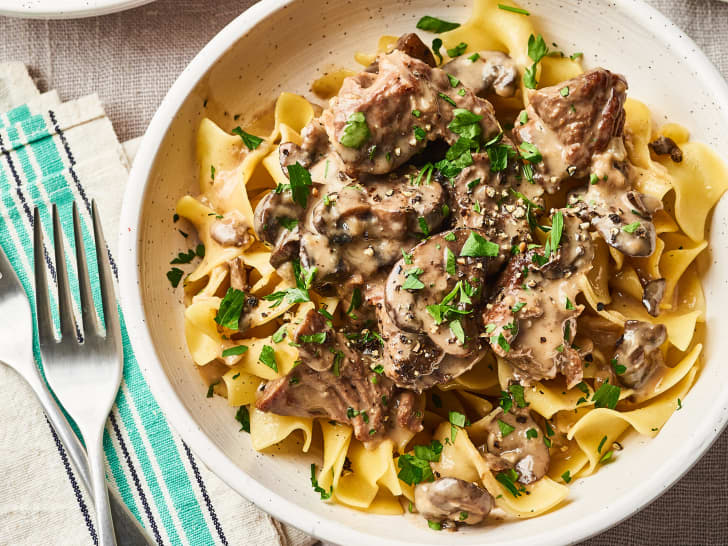

Beef Stroganoff

Slow cooker beef stroganoff recipe. Roman and I made this junior year of
college and it is dank as fuck. One of the first slow cooker recipes I
ever tried. Sauce creamier than your girls pussy.
Source
Ingredients:
- 2 1/2 lbs stew meat (chuck roast is a personal fav)
- 1 teaspoon garlic salt
- 1/2 teaspoon black pepper
- 4 tablespoons olive oil
- 3 tablespoons cold butter, separated
- 1/2 cup white wine, for the girlies!
- 16 oz. button mushroom
- 1 small yellow onion, diced
-
4 cloves garlic (but really though, who only puts cloves? put a whole
bulb in. dont be a pussy :/), minced
-
4 cups beef broth (it's called beef stroganoff. what did you expect?)
- 1 beef bouillon cube
- 2 tablespoons red wine vinegar
-
2 tablespoons worcestershire sauce
(warcches-worcesstercestersirworcesterserworsurcessure sauce???)
- 2 tablespoons dijon mustard
To thicken:
- 1/4 cup cornstarch + 1/4 cup cold water
- 1 1/2 cups sour cream, not reduced fat
- 10.5 oz cream of mushroom soup
For Serving:
- Egg Noodles - as much as you want. within reason though...
Instructions bc ya dumb:
-
Cut the beef into one-inch cubes and pat completely dry. Discard any
large pieces of fat. Fat that’s marbleized into the meat is fine!
-
Season with garlic salt and pepper. Sprinkle with flour and toss to
coat.
-
Heat 2 Tablespoons olive oil in a skillet over medium-high heat. Sear
the meat in batches for 45 seconds per side, until browned but not
cooked through. Use kitchen tongs to carefully remove and set aside on
a plate. Add more olive oil between batches as needed and decrease
heat slightly if the pan gets too hot.
-
Add 1 Tablespoon butter and white wine to the pot over medium heat.
Use a silicone spatula to “clean” (deglaze) the bottom of the pan. Add
the onions and mushrooms and cook for 4 minutes. Add the minced garlic
and cook for 1 more minute. Remove from heat.
-
Add the beef broth, bouillon, red wine vinegar, Worcestershire sauce,
and Dijon mustard to the Slow Cooker and stir to combine. Add the beef
as well as any juice that may have dripped onto the plate. Add the
onions/mushrooms/garlic.
- Cook on high for 4-5 or on low for 8-9 hours.
-
Combine the cornstarch/cold water mixture and whisk it into the Slow
Cooker.
- Flip to warm.
-
In a medium bowl, whisk sour cream with 1 cup liquid from the slow
cooker until smooth. Add to Slow Cooker and stir carefully to combine.
-
Stir in the condensed cream of mushroom soup if desired. (My homemade
version adds even more thickness and flavor.)
-
Finally, turn heat off and swirl in 2 Tablespoons of cold butter. This
adds a smooth, velvety finish.
-
Serve over egg noodles. If desired, add cooked/drained egg noodles
right to the Slow Cooker, stir to combine, and serve!